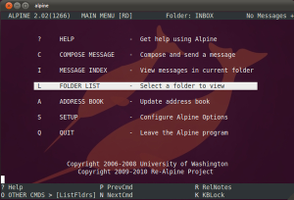

Alpine
Dieser Artikel wurde für die folgenden Ubuntu-Versionen getestet:
Ubuntu 16.04 Xenial Xerus
Ubuntu 14.04 Trusty Tahr
Zum Verständnis dieses Artikels sind folgende Seiten hilfreich:
 Alpine
Alpine  ist ein komfortables E-Mail-Programm für die Konsole, das wie sein Vorgänger Pine von der University of Washington in Seattle heraus gegeben wurde. Seit 2009 wird es von der Community weiter entwickelt. Ein prominenter Nutzer ist u.a. Linus Torvalds. Alpine ist vergleichbar mit anderen E-Mail-Programmen für die Konsole wie Mutt. Im Gegensatz zu diesem kommt Alpine jedoch ohne separat einzurichtende MTAs zum Empfangen und Versenden von Nachrichten aus und hat eine vielfach mit Erläuterungen ausgestattete Menüführung. Bisher gibt es das Programm nur auf Englisch.
ist ein komfortables E-Mail-Programm für die Konsole, das wie sein Vorgänger Pine von der University of Washington in Seattle heraus gegeben wurde. Seit 2009 wird es von der Community weiter entwickelt. Ein prominenter Nutzer ist u.a. Linus Torvalds. Alpine ist vergleichbar mit anderen E-Mail-Programmen für die Konsole wie Mutt. Im Gegensatz zu diesem kommt Alpine jedoch ohne separat einzurichtende MTAs zum Empfangen und Versenden von Nachrichten aus und hat eine vielfach mit Erläuterungen ausgestattete Menüführung. Bisher gibt es das Programm nur auf Englisch.
Installation¶
Alpine ist in den offiziellen Paketquellen enthalten, das zu installierende [1] Paket heißt:
alpine (universe)
 mit apturl
mit apturl
Paketliste zum Kopieren:
sudo apt-get install alpine
sudo aptitude install alpine
Einrichtung¶
 Nach der Installation startet man das Programm im Terminal [2] mit dem Kommando:
alpine
Beim ersten Start von Alpine wird, sofern noch nicht vorhanden, die Konfigurationsdatei ~/.pinerc im Homeverzeichnis angelegt. Vom Startbildschirm navigiert man in die verschiedenen Rubriken entweder mit den Pfeiltasten oder mit den links von den Rubriken vermerkten Tastaturkürzeln. In die Programmkonfiguration gelangt man also über S , C (die Konfiguration kann auch direkt in der .pinerc erfolgen).
So man nur ein Postfach verwendet, füllt man nun die ersten 15 Zeilen aus, um dieses einzurichten. Man navigiert mit ↑ ↓ auf eine Zeile, drückt ⏎ und gibt die nötigen Angaben ein. Wenn man mehr als ein Konto benutzen möchte, muss man dafür zusätzliche Postfächer und Absender einrichten.
Beispiel-Konfiguration¶
Als Beispiel für die Konfiguration mit einem einzelnen E-Mail-Konto dient ein fiktiver Benutzer mit einem POP3-Zugang auf GMX. Es bleiben einige Felder ohne Eintrag, also "<No Value Set>".
Personal Name = Max Mustermann
User Domain = <No Value Set>
SMTP Server (for sending) = mail.gmx.net/ssl/user=max.mustermann@gmx.de
NNTP Server (for news) = <No Value Set>
Inbox Path = {pop.gmx.net/ssl/pop3/user=max.mustermann@gmx.de}
Incoming Archive Folders = <No Value Set>
Pruned Folders = <No Value Set>
Default Fcc (File carbon copy) = ~/mail/Sent
Default Saved Message Folder = <No Value Set: using "saved-messages">
Postponed Folder = ~/mail/Drafts
Read Message Folder = ~/mail/Read
Form Letter Folder = <No Value Set>
Trash Folder = ~/mail/Trash
Literal Signature = <No Value Set>
Signature File = <No Value Set: using ".signature">Weitere Einstellungen¶
Darunter findet man dann mehrere Seiten Konfigurationsmöglichkeiten, die man noch verlängern kann, indem man ein Häkchen links der Option Expose Hidden Config unter [ Advanced User Preferences ] setzt. Alle Optionen hier zu erklären, wäre unmöglich. Man kann sich über den Inhalt jeder Option informieren, wenn man sie mit dem Cursor anwählt und dann
? für Help drückt. Des Weiteren sind die Links am Ende dieses Artikels hilfreich.
Es lohnt sich auch für den Anfang schon, sich mit den Konfigurationsmöglichkeiten vertraut zu machen. Nützlich sind z.B. folgende Einstellungen:
## Dieser Eintrag sorgt dafür, dass die vom POP-Ordner abgeholten Nachrichten nach dem Lesen in den Read Message Folder verschoben werden. [X] Auto Move Read Messages ## Um gleich beim Programmstart in der Folder List zu landen. Initial Keystroke List = L ## Den Bildbetrachter (für z.B. Mail-Anhänge) wählen. Image Viewer = eog ## Folgender Eintrag sorgt dafür, dass Alpine die eigene Adresse in der Übersicht aller Nachrichten als eigene Empfangs- und Absender-Adresse erkennt. Alternate Addresses = [eigene E-Mail Adresse eintragen] ## Den Browser für das Öffnen von Links aus Nachrichten wählen. URL-Viewers = firefox -new-tab ## Dieser Eintrag bestimmt, wie viele Kopien einer gerade zu verfassenden Nachrichten Alpine im eigenen home-Verzeichnis anlegt. Dead Letter Files = 0
"Folder Reopen Rule" und "Stayopen Folders"¶
Je nach Verwendung von POP3- und/oder IMAP-Postfächern muss man technisch bedingt und auch nach eigenen Bedürfnissen die richtigen Einstellungen vornehmen.
POP-Server können technisch bedingt nicht geöffnet bleiben, sondern müssen immer erneut geöffnet werden, wenn man das Postfach auf neue Nachrichten prüfen möchte. Um jedoch dieses Öffnen des Posteinganges "INBOX" zu beschleunigen, kann man folgende Option setzen:
Folder Reopen Rule = Set Rule Values ... (*) Yes for POP/NNTP, Ask about other remote [Yes] ...
Bei der Verwendung von IMAP-Postfächern kann der Arbeitsfluss beschleunigt werden, indem man die entsprechenden Posteingangs-Ordner als Stayopen Folders einträgt, z.B.:
Stayopen Folders = INBOX
Farben einrichten¶
Wer ein Terminal mit Farbunterstützung verwendet (z.B. das Terminal von GNOME), kann die verschiedenen Anzeige-Bereiche von Alpine nach den eigenen Bedürfnissen einfärben.
Vom Hauptmenü aus gelangt man zu den Farbeinstellungen mit
S ,
K . Dort wählt man zunächst einmal ganz oben bei Color Style, welche Palette man benutzen möchte. Danach kann man sich unter GENERAL COLORS, INDEX COLORS und HEADER COLORS die eigenen Farben für jeden Anzeigenbereich auswählen. Jeder Anzeigenbereich besteht aus einer Vordergrund- und einer Hintergrundfarbe.
Zusätzlich dazu gibt es, leider etwas versteckt, auch die Möglichkeit, die Farben der unterschiedlichen Nachrichten in der Nachrichten-Übersicht "Index" an ihre jeweilige Bedeutung anzupassen, sodass z.B. die Zeile einer als "important" markierten Nachricht rot wird, oder die Zeile einer als "unseen" markierten Nachricht grün wird. Vom Hauptmenü aus gelangt man mit
S ,
R ,
I zu den "Indexcolors". Hier erstellt man ähnlich den Filter Rules Regeln für die Einfärbung der Nachrichten in der Nachrichten-Übersicht.
Bedienung¶
Eine Zeile am oberen Rand zeigt stets an, wo man sich gerade befindet sowie einige andere Informationen. Am unteren Rand befinden sich zwei Zeilen mit den anwendbaren Tastaturkürzeln, durch welche oftmals mit
O geblättert werden kann. Hinter "Message Index" verbirgt sich der zuletzt geöffnete Ordner. Am wichtigsten im täglichen Betrieb ist die "Folder List".
Zum Punkt "Compose Message" ist noch zu erwähnen, dass man auch aus der "Folder List" und dem Hauptmenü heraus mit der Taste
# in ein Menü zum Auswählen eines Absenders und danach direkt in das Fenster zum Verfassen einer neuen Nachricht gelangt.
Eine Nachricht schicken¶
Die Felder sind selbsterklärend. Neben "To" trägt man die Empfänger ein, oder drückt
Strg +
T , um sie aus dem Adressbuch auszuwählen. Das Gleiche gilt für "Cc". Möchte man einen oder mehrere "Bcc" hinzufügen, aktiviert man zunächst die "Rich Hdr" mit
Strg +
R .
Dateianhänge fügt man in der Zeile "Attchmnt" hinzu. Wenn man sich in dieser Zeile befindet, gelangt man mit der Tastenkombination
Strg +
T in den Dateibrowser. Falls man aus einem Ordner mehrere Dateien auswählen möchte, aktiviert man den "list mode" mit
L . So kann man die Dateien mit einem Häkchen versehen, die man auswählen möchte.
Wenn man sich mit dem Cursor im Nachrichtentext befindet, kann man mit Strg + T die Rechtschreibprüfung aufrufen. Dabei wird Aspell aufgerufen und wendet das Wörterbuch der Sprache an, welche man in seinem Desktop-Benutzerkonto eingestellt hat. Wessen Desktop also deutsche Menüs hat, dessen Nachrichtentext wird damit auf deutsche Rechtschreibung geprüft.
Möchte man die Nachricht nicht sofort versenden, sondern noch aufschieben, kann man sie mit der Tastenkombination
Strg +
O (Postpone) als Entwurf kennzeichnen. Sie landet dann in dem in der Konfiguration angegebenen "Postponed Folder" und kann aus dem Hauptmenü heraus mit
C fortgeführt werden.
Am Ende versendet man die Nachricht mit Strg + X .
Mausunterstützung¶
In einem X-Terminal kann man sich in Alpine auch mit der Maus bewegen. Man klickt einfach doppelt auf eine Rubrik oder einfach auf einen Menüpunkt am unteren Bildschirmrand und die entsprechende Rubrik/Funktion wird aufgerufen.
Passwörter speichern¶
Alle zum Öffnen von Postfächern und Versenden von Nachrichten nötigen Passwörter kann Alpine verschlüsselt in der Datei ~/.pine-passfile speichern. Wenn man das erste Mal ein Postfach mit Alpine aufruft, wird man nach seinem Zugangspasswort gefragt. Nach Eingabe des Passwortes fragt einen Alpine, ob man dieses Passwort speichern möchte. Drückt man Y , legt Alpine die Datei an und speichert hier in verschlüsselter Form das Zugangspasswort.
Wenn man keine Passwörter abspeichern will, drückt man einfach N bzw. löscht die Datei. Ein neue, leere ~/.pine-passfile erstellt man durch den Befehl:
touch .pine-passfile
Filter erstellen¶
Aus dem Hauptmenü gelangt man mit
S ,
R ,
F zu den Filtern. Hier fügt man mit
A einen Filter hinzu. Jeder Filter braucht einen spezifischen "Nickname". Danach spezifiziert man im Bereich CURRENT FOLDER CONDITIONS BEGIN HERE den Ordner, auf den der Filter angewandt wird. Im folgenden Bereich FILTERED MESSAGE CONDITIONS BEGIN HERE spezifiziert man, unter welchen Bedingungen der Filter in Kraft tritt und im folgenden Bereich ACTIONS BEGIN HERE legt man schließlich fest, was der Filter bewirken soll.
Tipps & Tricks¶
Abrufen mehrerer Postfächer¶
Es muss die Option "Expose Hidden Config" unter [ Advanced User Preferences ] aktiviert sein.
Gleich unterhalb von [ Normally hidden configuration options ] beginnt man, zusätzliche Postfächer einzutragen. In der Zeile "Incoming Folders" trägt man zusätzliche Postfächer ein. Das Format lautet:
Incoming Folders = [Ordner-Name für die Folder List] {[Server-Name]/[Verschlüsselungs-Option]/user=[Benutzername]}INBOX
Das INBOX am Ende gibt den betreffenden Unterordner des Benutzer-Kontos auf dem Server an. Es folgt ein Beispiel für ein IMAP-Konto an der Humboldt-Uni Berlin:
Incoming Folders = UNI_INBOX {mailbox.cms.hu-berlin.de/tls/user=mustermannm}INBOX
Weitere Postfächer fügt man hinzu, indem man am Ende einer Zeile ein Komma setzt, nach welchem man einfach ohne Leerzeichen das nächste Postfach eingibt. Da es sich hierbei um ein IMAP-Postfach handelt, kann man nun wiederum dieses Postfach UNI_INBOX der Zeile Stayopen Folders hinzufügen.
Um schließlich alle weiteren Unterordner seines IMAP-Kontos wie Draft, Sent, Templates, usw. der "Folder List" hinzuzufügen, setzt man in der nächsten Zeile "Folder Collections" fort. Hier gibt man nun wiederum einen spezifischen Ordner-Namen für die "Folder list" an, gefolgt von den gleichen Server-Angaben wie eine Zeile drüber, exklusive der Angabe INBOX am Ende.
Folder Collections = UNI {mailbox.cms.hu-berlin.de/tls/user=mustermannm}Hinweis:
Wenn man neben diesem IMAP-Konto weiterhin lokale E-Mail Ordner in der "Folder List" behalten möchte, darf man die Zeile "~/mail/" nicht aus den "Folder Collections" löschen! Man setzt hinter diese Zeile ein Komma, hinter dem man die IMAP-Konten in obigem Format einträgt.
Verschiedene Absender / "Roles" einrichten¶
Wenn man mit unterschiedlichen E-Mail Adressen Nachrichten verschicken möchte, kann man dafür "Roles" erstellen. "Roles" ist die Alpine-interne Bezeichnung der zur Verfügung stehenden Absender-Adressen. Vom Hauptmenü aus kommt man mit
S ,
R ,
R zur Einrichtung der "Roles". Hier drückt man
A , um einen neuen Absender zu erstellen. Jeder Absender braucht einen spezifischen "Nickname". Im Bereich CURRENT FOLDER CONDITIONS BEGIN HERE setzt man das (*) neben Email. Im folgenden Bereich CURRENT MESSAGE CONDITIONS BEGIN HERE spezifiziert man, unter welchen Bedingungen der Absender unbedingt in Kraft treten soll. Das heißt, dass der Absender mindestens unter diesen Bedingungen verwendet wird. Im folgenden Bereich ACTIONS BEGIN HERE setzt man schließlich alle header und den SMTP-Ausgangsserver.
Danach kann man Nachrichten mit dem neuen Absender verschicken. Man kann ihn auch einsetzen, ohne dass die bei ihm eingestellten "conditions" zutreffen, indem man im Hauptmenü oder in der "Folder list"
# drückt und den Absender aus der sich öffnenden Liste auswählt.
Nützliche Kommandos¶
Das Kommando, um Alpine direkt im Composer-Fenster mit einem bestimmten Empfänger zu starten, sieht so aus:
alpine empfänger.adresse@domain.xyz
Weitere Informationen liefert die Manpage zum Programm.
Programm-Starter für Gnome 3 / Unity erstellen¶
Alpine hat in GNOME 3 und Unity keinen eigenen Programm-Starter. Diesen erstellt man als .desktop-Datei. Mit einem Editor [3] wird ein neuer Starter ~/.local/share/applications/alpine.desktop erstellt und mit dem folgenden Inhalt gefüllt:
[Desktop Entry] Version=1.0 Encoding=UTF-8 Name=Alpine GenericName=mail client Comment=read and write mail Comment[de]=Emails lesen und schreiben Exec=/usr/bin/alpine Icon=/usr/share/icons/Humanity/apps/48/evolution.svg Terminal=true Type=Application
Danach diese Datei noch ausführbar machen:
chmod +x .local/share/applications/alpine.desktop
Links¶
Extern¶
Alpine
auf der Internetseite der UoW Alpine Tech Notes
- ausführlichere Anleitung zur KonfigurationAlpine Tech Notes continued
- Fortführung
Alpine - Wikipedia
re-alpine
- von der Community fortgeführtes Alpine-Projekt
- Erstellt mit Inyoka
-
 2004 – 2017 ubuntuusers.de • Einige Rechte vorbehalten
2004 – 2017 ubuntuusers.de • Einige Rechte vorbehalten
Lizenz • Kontakt • Datenschutz • Impressum • Serverstatus -
Serverhousing gespendet von